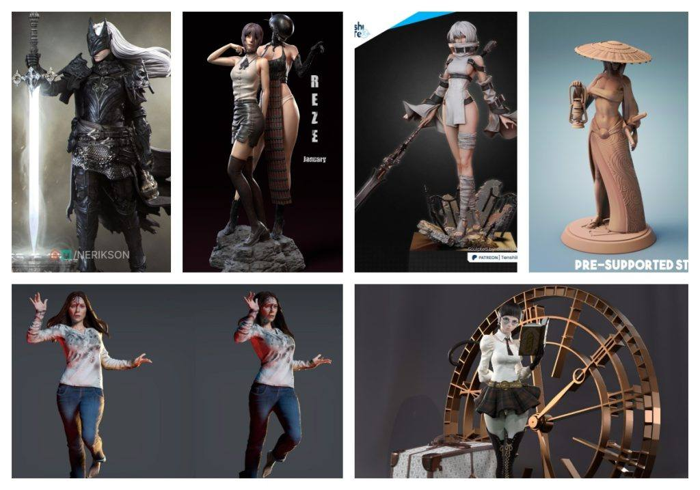
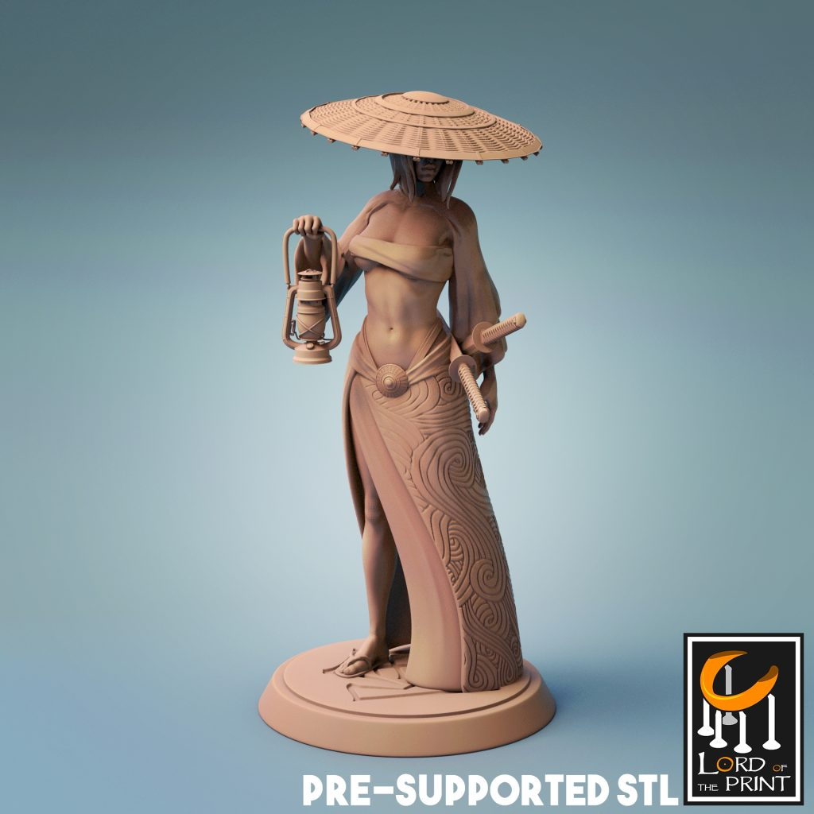
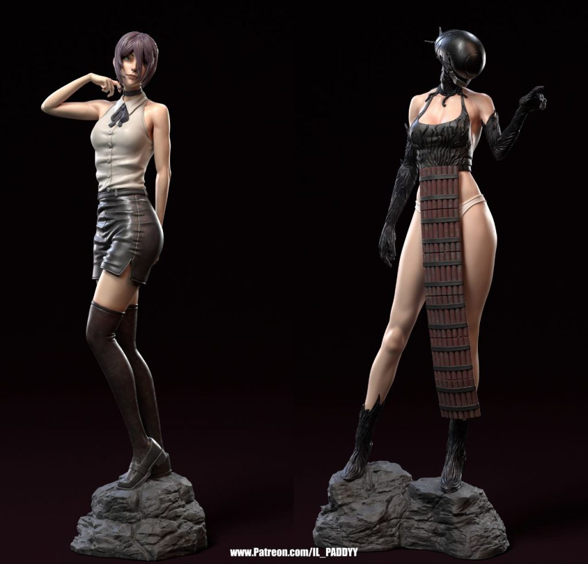
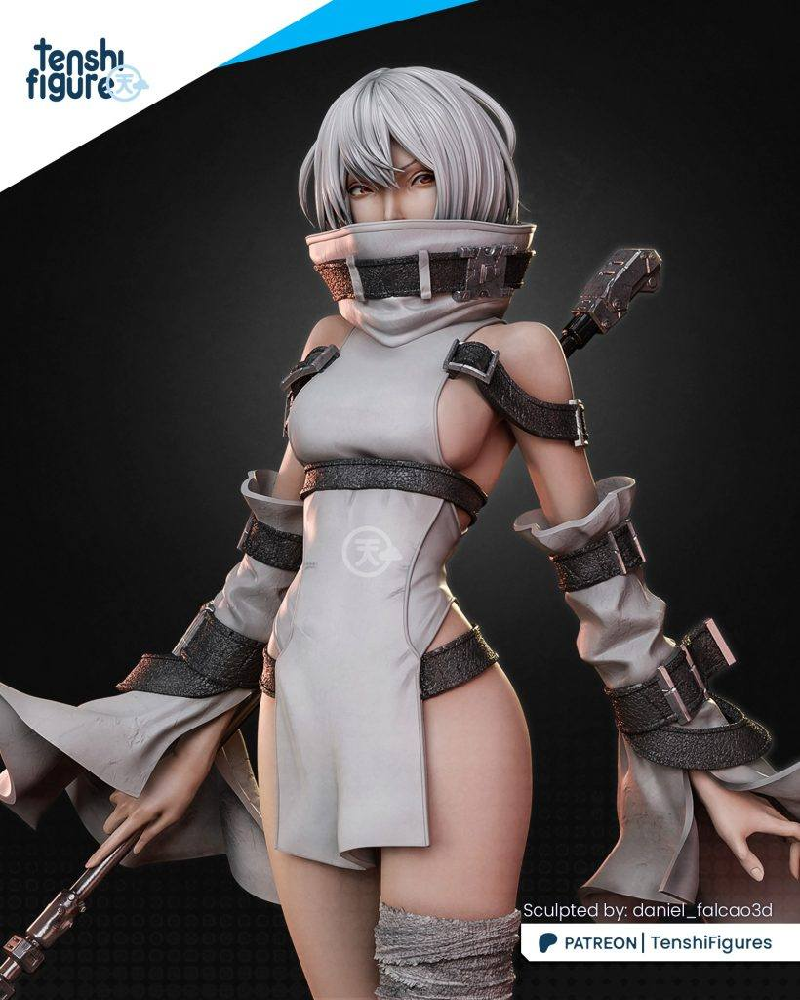
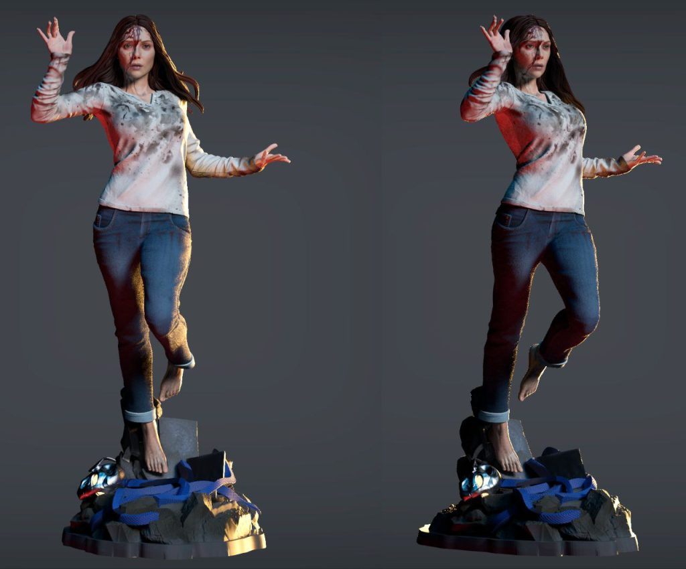
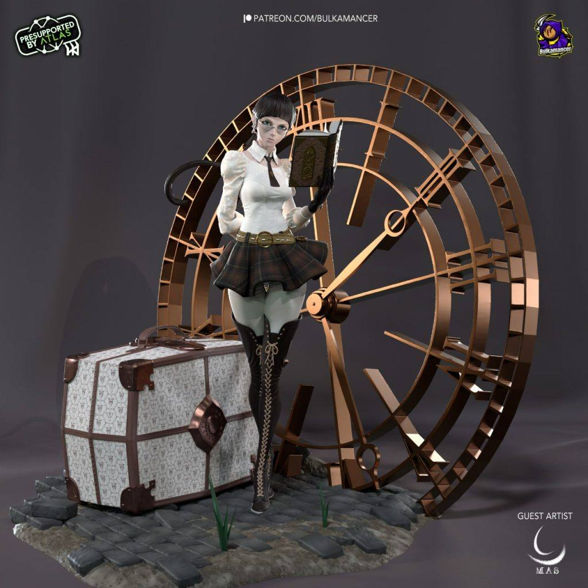
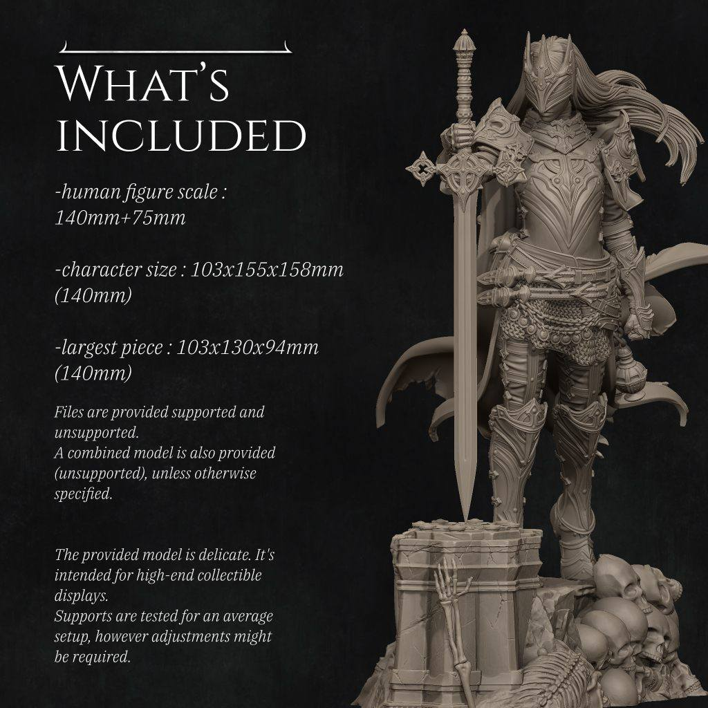

模型分享
2025年10月09日STl图纸文件分享

本次带来的STL合集聚焦于那些充满深度与故事感的角色，他们来自经典漫画、3A游戏与奇幻史诗。每一件作品都像一扇通往异世界的大门，等待着您用打印机将其召唤至现实。
模型精选与导读：
- 1. Pablo Perdomo – 经典旺达
- 简介： 出自大师Pablo Perdomo之手，这款“经典旺达”极有可能致敬了漫威宇宙中的猩红女巫。作品以其标志性的古典服饰和充满魔力的动态姿势为特色，完美融合了角色的优雅与强大气场，是粉丝收藏的绝佳选择。
- 2. Tenshi Figures – 尼尔：诺埃尔
- 简介： 来自《尼尔》系列的悲情角色。Tenshi Figures精准捕捉了人造人诺埃尔沉重而柔美的气质，其巨大的武器与纤细的身形形成强烈对比，服装的破损细节和飘逸发丝都蕴含着浓厚的末世美学。
- 3. Il_Paddyy – 电锯人：雷赛与恶魔炸弹
- 简介： 人气角色雷赛与她的标志性恶魔炸弹一同登场！这款模型动态感极强，定格了爆炸的瞬间，将雷赛的疯狂与可爱完美结合。复杂的爆炸特效件是打印技术的终极挑战，成品将极具视觉冲击力。
- 4. observer_of_timelines – 时间线观察者
- 简介： 一款充满神秘感的原创角色。从其命名来看，模型可能塑造了一位超脱于时间长河之上的存在，或许手持记录万象的典籍，周身环绕着时钟与沙漏等象征元素，风格深邃，引人遐想。
- 5. Nerikson – 死亡领域牧师莱尼斯
- 简介： 出自著名艺术家Nerikson之手的原创奇幻角色。作品以其标志性的黑暗华丽风格，塑造了一位侍奉死亡神祇的牧师。盔甲上的骷髅雕文、破败的斗篷以及手中萦绕的暗影能量，共同构成了一个令人过目难忘的暗黑幻想杰作。
- 6. Samurai_Female_Explorer – 女武士探索者
- 简介： 这款模型将东方武士的刚毅与女性探索者的柔美坚韧融为一体。她可能身着混合风格的实用盔甲，手持传统的武士刀，姿态既充满戒备又显得从容，仿佛一位游走于未知边境的浪人，故事感十足。
打印与后处理指南：
- 特效件处理： 打印“雷赛”的爆炸特效时，可尝试使用透明或半透明树脂，并通过染色获得炫目的光效。
- 精细纹理： “死亡领域牧师”的盔甲雕文和布料褶皱极为精细，建议使用低层高打印，并为后续的“渍洗”和“干扫”涂装技法留出足够细节。
- 动态平衡： “女武士探索者”等单脚站立的模型，请确保底座提供足够支撑，或在打印时调整朝向，保证模型稳定性。
愿这组充满艺术感的模型能陪伴您度过一段宁静而投入的创作时光。我们下次探索再见。
Happy Printing & Painting！






链接: https://pan.baidu.com/s/1WbDnJTvim5SVLvOwLLTAYA?pwd=9vm2 提取码: 9vm2
以上内容仅供个人使用（非商用）
ONLY for PERSONAL (NON-COMMERCIAL) use.
加群获得更多免费模型！